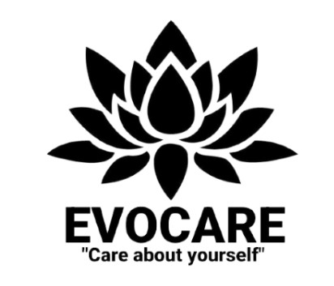

Profil Perusahaan
Perkembangan zaman pada saat ini sudah membuat teknologi menjadi sesuatu yang mempermudah untuk memberikan informasi. Dengan memanfaatkan teknologi maka informasi akan dengan pesat dibagikan.
Dengan memanfaatkan perkembangan zaman maka akan mempermudah pembagian informasi salah satunya dengan membuat website yang dapat diakses oleh semua orang.
produk yang ditawarkan memiliki komposisi bahan alami yang memberikan dampak yang baik
Produk Yang Ditawarkan :

Fash wash ekstra aloe vera memiliki kandungan yang lebih banyak komposisi lidah buaya sehingga pada penggunaan kulit akan memberikan dampak yang lebih maksimal.
| NO | PAKET PRODUK | HARGA | KETERANGAN |
|---|---|---|---|
| 1 | Ektra Aloe Vera | Rp20.000 | Berat produk 40ml |
| 2 | Aloe Vera | Rp20.000 | Berat produk 60ml |
Evocare
Penasaran dengan produk yang kami tawarkan dan ingin merasakan dengan cara memesan via online atau atau dine in langsung ke restoran.
Untuk pemesanan produk secara online bisa langsung menghubungi nomor di bawah ini :
Sutan Viqri Samudra : 0895-1667-0864
Produk Sunscreen

Tidak hanya menawarkan produk face wash namun evocare memiliki varian sunscrenn untuk melindungi wajah dari sengatan matahari ketika sedang berada diluar ruangan.